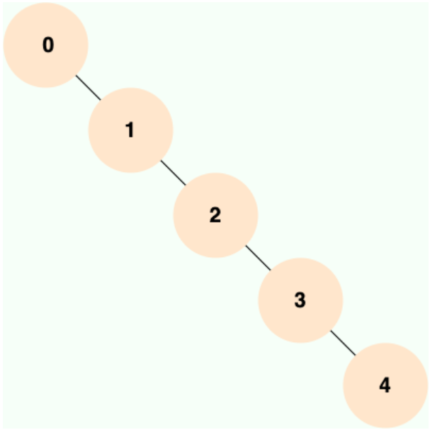

MySQL索引
索引是一种用于快速查询和检索数据的数据结构，其本质可以看成是一种排序好的数据结构。
索引底层数据结构存在很多种类型，常见的索引结构有: B 树， B+树 和 Hash、红黑树。在 MySQL 中，无论是 Innodb 还是 MyIsam，都使用了 B+树作为索引结构。
二叉查找树(BST)
二叉查找树（Binary Search Tree）是一种基于二叉树的数据结构，它具有以下特点：
- 左子树所有节点的值均小于根节点的值。
- 右子树所有节点的值均大于根节点的值。
- 左右子树也分别为二叉查找树。
当二叉查找树是平衡的时候，也就是树的每个节点的左右子树深度相差不超过 1 的时候，查询的时间复杂度为 O(log2(N))，具有比较高的效率。然而，当二叉查找树不平衡时，例如在最坏情况下（有序插入节点），树会退化成线性链表（也被称为斜树），导致查询效率急剧下降，时间复杂退化为 O（N）。
也就是说，二叉查找树的性能非常依赖于它的平衡程度，这就导致其不适合作为 MySQL 底层索引的数据结构。
为了解决这个问题，并提高查询效率，人们发明了多种在二叉查找树基础上的改进型数据结构，如平衡二叉树、B-Tree、B+Tree 等。
AVL 树
AVL 树是计算机科学中最早被发明的自平衡二叉查找树，它的名称来自于发明者 G.M. Adelson-Velsky 和 E.M. Landis 的名字缩写。AVL 树的特点是保证任何节点的左右子树高度之差不超过 1，因此也被称为高度平衡二叉树，它的查找、插入和删除在平均和最坏情况下的时间复杂度都是 O(logn)。
AVL 树采用了旋转操作来保持平衡。主要有四种旋转操作：LL 旋转、RR 旋转、LR 旋转和 RL 旋转。其中 LL 旋转和 RR 旋转分别用于处理左左和右右失衡，而 LR 旋转和 RL 旋转则用于处理左右和右左失衡。
由于 AVL 树需要频繁地进行旋转操作来保持平衡，因此会有较大的计算开销进而降低了数据库写操作的性能。并且， 在使用 AVL 树时，每个树节点仅存储一个数据，而每次进行磁盘 IO 时只能读取一个节点的数据，如果需要查询的数据分布在多个节点上，那么就需要进行多次磁盘 IO。 磁盘 IO 是一项耗时的操作，在设计数据库索引时，我们需要优先考虑如何最大限度地减少磁盘 IO 操作的次数。
红黑树
红黑树是一种自平衡二叉查找树，通过在插入和删除节点时进行颜色变换和旋转操作，使得树始终保持平衡状态，它具有以下特点：
- 每个节点非红即黑；
- 根节点总是黑色的；
- 每个叶子节点都是黑色的空节点（NIL 节点）；
- 如果节点是红色的，则它的子节点必须是黑色的（反之不一定）；
- 从任意节点到它的叶子节点或空子节点的每条路径，必须包含相同数目的黑色节点（即相同的黑色高度）。
和 AVL 树不同的是，红黑树并不追求严格的平衡，而是大致的平衡。正因如此，红黑树的查询效率稍有下降，因为红黑树的平衡性相对较弱，可能会导致树的高度较高，这可能会导致一些数据需要进行多次磁盘 IO 操作才能查询到，这也是 MySQL 没有选择红黑树的主要原因。也正因如此，红黑树的插入和删除操作效率大大提高了，因为红黑树在插入和删除节点时只需进行 O(1) 次数的旋转和变色操作，即可保持基本平衡状态，而不需要像 AVL 树一样进行 O(logn) 次数的旋转操作。
红黑树的应用还是比较广泛的，TreeMap、TreeSet 以及 JDK1.8 的 HashMap 底层都用到了红黑树。对于数据在内存中的这种情况来说，红黑树的表现是非常优异的。
B 树
B 树全称为 多路平衡查找树 。
在 B 树中，有两种节点：
- 内部节点（internal node）：存储了数据以及指向其子节点的指针。
- 叶子节点（leaf node）：与内部节点不同的是，叶子节点只存储数据，并没有子节点。
m阶的 B 树的特性
表示这个树的每一个节点最多可以拥有的子节点个数。一棵m阶的 B 树满足的性质如下：
- 每个节点最多有m个子节点。
- 每一个非叶子节点（除根节点）最少有 $\frac{m}{2}$ 个子节点。
- 如果根节点不是叶子节点，那么它至少有两个子节点。
- 有K个子节点的非叶子节点拥有k-1个键，且升序排列，满足k[i]<k[i+1]。
- 所有的叶子节点都在同一层。
B 树优势
之前已经介绍过二叉查找树。但是这类型数据结构的问题在于，由于每个节点只能容纳一个数据，导致树的高度很高，逻辑上挨着的节点数据可能离得很远。
考虑在磁盘中存储数据的情况，与内存相比，读写磁盘有以下不同点：
- 读写磁盘的速度相比内存读写慢很多。
- 每次读写磁盘的单位要比读写内存的最小单位大很多。
由于读写磁盘的这个特点，因此对应的数据结构应该尽量的满足「局部性原理」：「当一个数据被用到时，其附近的数据也通常会马上被使用」，为了满足局部性原理，所以应该将逻辑上相邻的数据在物理上也尽量存储在一起。这样才能减少读写磁盘的数量。
所以，对比起一个节点只能存储一个数据的 BST 类数据结构来，要求这种数据结构在形状上更「胖」、更加「扁平」，即：每个节点能容纳更多的数据，这样就能降低树的高度，同时让逻辑上相邻的数据都能尽量存储在物理上也相邻的硬盘空间上，减少磁盘读写。
B+树
B+ 树是 B 树 的一个升级，它比 B 树更适合实际应用中操作系统的文件索引和数据库索引。
B+ 树是一种多叉排序树，即每个节点通常有多个孩子。一棵 B+ 树包含根节点、内部节点和叶子节点。根节点可能是一个叶子节点，也可能是一个包含两个或两个以上孩子节点的节点。
B+ 树的特点是能够保持数据稳定有序，其插入与修改拥有较稳定的对数时间复杂度。B+ 树元素自底向上插入，这与二叉树恰好相反。
m阶 B+ 树的特性
m表示这个树的每一个节点最多可以拥有的子节点个数。一棵m阶的 B+ 树和 B 树的差异在于：
- 有n棵子树的节点中含有n-1个关键字（即将区间分为n个子区间，每个子区间对应一棵子树)。
- 所有叶子节点中包含了全部关键字的信息，及指向含这些关键字记录的指针，且叶子节点本身依关键字的大小自小而大顺序链接。
- 所有的非叶子节点可以看成是索引部分，节点中仅含有其子树（根节点）中的最大（或最小）关键字。
- 除根节点外，其他所有节点中所含关键字的个数最少有 $\frac{m}{2}$（注意：B 树中除根以外的所有非叶子节点至少有$\frac{m}{2}$棵子树)。
同时，B+ 树为了方便范围查询，叶子节点之间还用指针串联起来。

B+ 树相比于 B 树的优势
由于索引节点上只有索引而没有数据，所以索引节点上能存储比 B 树更多的索引，这样树的高度就会更矮。树的高度越矮，磁盘寻道的次数就会越少。
因为数据都集中在叶子节点，而所有叶子节点的高度相同，那么可以在叶子节点中增加前后指针，指向同一个父节点的相邻兄弟节点，这样可以更好地支持查询一个值的前驱或后继，使连续访问更容易实现。
比如这样的 SQL 语句：select * from tbl where t > 10，如果使用 B+ 树存储数据的话，可以首先定位到数据为 10 的节点，再沿着它的 next 指针一路找到所有在该叶子节点右边的叶子节点，返回这些节点包含的数据。
主键索引(Primary Key)
数据表的主键列使用的就是主键索引。
一张数据表有只能有一个主键，并且主键不能为 null，不能重复。
在 MySQL 的 InnoDB 的表中，当没有显示的指定表的主键时，InnoDB 会自动先检查表中是否有唯一索引且不允许存在 null 值的字段，如果有，则选择该字段为默认的主键，否则 InnoDB 将会自动创建一个 6Byte 的自增主键。
二级索引
二级索引（Secondary Index）的叶子节点存储的数据是主键的值，也就是说，通过二级索引可以定位主键的位置，二级索引又称为辅助索引/非主键索引。
唯一索引，普通索引，前缀索引等索引都属于二级索引。
- 唯一索引(Unique Key):唯一索引也是一种约束。唯一索引的属性列不能出现重复的数据，但是允许数据为 NULL，一张表允许创建多个唯一索引。 建立唯一索引的目的大部分时候都是为了该属性列的数据的唯一性，而不是为了查询效率。
- 普通索引(Index):普通索引的唯一作用就是为了快速查询数据，一张表允许创建多个普通索引，并允许数据重复和 NULL。
- 前缀索引(Prefix):前缀索引只适用于字符串类型的数据。前缀索引是对文本的前几个字符创建索引，相比普通索引建立的数据更小，因为只取前几个字符。
- 全文索引(Full Text):全文索引主要是为了检索大文本数据中的关键字的信息，是目前搜索引擎数据库使用的一种技术。Mysql5.6 之前只有 MYISAM 引擎支持全文索引，5.6 之后 InnoDB 也支持了全文索引。
覆盖索引
如果一个索引包含（或者说覆盖）所有需要查询的字段的值，我们就称之为 覆盖索引（Covering Index） 。
在 InnoDB 存储引擎中，非主键索引的叶子节点包含的是主键的值。这意味着，当使用非主键索引进行查询时，数据库会先找到对应的主键值，然后再通过主键索引来定位和检索完整的行数据。这个过程被称为“回表”。
覆盖索引即需要查询的字段正好是索引的字段，那么直接根据该索引，就可以查到数据了，而无需回表查询
联合索引
使用表中的多个字段创建索引，就是 联合索引，也叫 组合索引 或 复合索引。
最左前缀匹配原则
最左前缀匹配原则指的是在使用联合索引时，MySQL 会根据索引中的字段顺序，从左到右依次匹配查询条件中的字段。如果查询条件与索引中的最左侧字段相匹配，那么 MySQL 就会使用索引来过滤数据，这样可以提高查询效率。
最左匹配原则会一直向右匹配，直到遇到范围查询（如 >、<）为止。
- 顺序的重要性：
- 复合索引的列顺序非常重要，查询条件必须从最左列开始匹配。
- 例如，索引
(name, age)不能用于查询WHERE age = 30。
- 范围查询的影响：
- 范围查询会中断索引的匹配，其右边的列不会被索引使用。
- 例如，索引
(name, age, email)在查询WHERE name = 'John' AND age > 30 AND email = 'test@example.com'中，只有name和age列会被索引使用，email列不会被索引使用。
- 覆盖索引：
- 如果查询的列都包含在复合索引中，MySQL 可以直接从索引中获取数据，而无需回表。
- 例如，索引
(name, age)可以用于查询SELECT name, age FROM users WHERE name = 'John'。
索引下推
索引下推（Index Condition Pushdown，简称 ICP） 是 MySQL 5.6 版本中提供的一项索引优化功能，它允许存储引擎在索引遍历过程中，执行部分 WHERE字句的判断条件，直接过滤掉不满足条件的记录，从而减少回表次数，提高查询效率。
MySQL 可以简单分为 Server 层和存储引擎层这两层。Server 层处理查询解析、分析、优化、缓存以及与客户端的交互等操作，而存储引擎层负责数据的存储和读取，MySQL 支持 InnoDB、MyISAM、Memory 等多种存储引擎。
索引下推的下推其实就是指将部分上层（Server 层）负责的事情，交给了下层（存储引擎层）去处理。
在传统的查询执行过程中，存储引擎会根据索引查找数据，然后将所有匹配索引条件的数据返回到服务器层，服务器层再根据其他条件进行过滤。而索引下推则允许存储引擎在索引查找阶段直接应用部分查询条件，从而减少返回给服务器层的数据量。
示例
假设有一个表 users，结构如下：
|
|
在 name 和 age 列上创建复合索引：
|
|
执行以下查询：
|
|
传统查询过程
- 存储引擎使用索引
idx_name_age查找name = 'John'的所有数据。 - 将所有
name = 'John'的数据返回到服务器层。 - 服务器层根据
age > 30进行过滤。
索引下推查询过程
- 存储引擎使用索引
idx_name_age查找name = 'John'的数据。 - 在索引查找阶段，直接应用
age > 30的条件，过滤掉不符合条件的数据。 - 只将
name = 'John'且age > 30的数据返回到服务器层。
索引下推的优势
- 可以减少回表次数之外，索引下推还可以减少存储引擎层和 Server 层的数据传输量。
- 适用于执行计划是 range, ref, eq_ref, ref_or_null 的范围查询。
- 对于 InnoDB 表，仅用于非聚簇索引。索引下推的目标是减少全行读取次数，从而减少 I/O 操作。对于 InnoDB 聚集索引，完整的记录已经读入 InnoDB 缓冲区。在这种情况下使用索引下推 不会减少 I/O。
- 子查询不能使用索引下推，因为子查询通常会创建临时表来处理结果，而这些临时表是没有索引的。
- 存储过程不能使用索引下推，因为存储引擎无法调用存储函数。